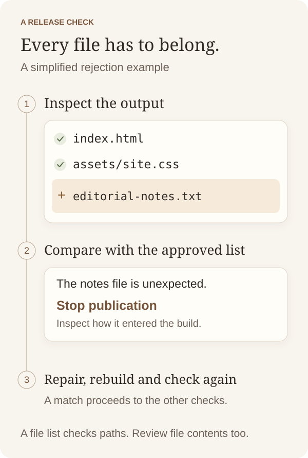
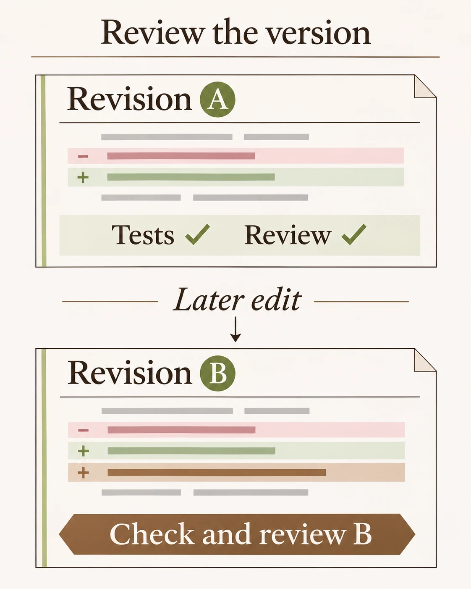

AI engineering
Before I accept an AI agent’s changes
A real publishing check from my website, and the question I ask before accepting an AI agent’s work.
The takeaway
Choose one failure the change must reject, demonstrate that rejection, and attach the result to the version being released.
The build could succeed and still publish the wrong files
While building my personal website with AI coding agents, I needed to keep build scripts, drafts and agent instructions private. Visitors should receive the finished pages, styles, scripts and approved images. I kept the source in a private GitHub repository and published the compiled output through a separate public repository.
The problem was deciding whether that output was safe to copy. A build could finish successfully and still include an extra file. Reviewing the page in a browser would show whether it looked right, but an unwanted notes file could sit alongside it without appearing on any page.
Agents helped implement the build and release checks. Before accepting that work, I wanted an observable answer to a specific question. Would the release check reject a file that had no reason to become public?
Compare the complete output with an approved list
The build writes into a separate output directory. The checker walks that whole directory and compares its file list with the approved public list. A mismatch stops the check.
Looking only for known private filenames would leave a gap. A newly created notes file might have a name nobody had thought to forbid. Looking only at the approved files would also miss it. The inventory has to include everything actually present.
This simplified comparison shows the idea. The path names are illustrative. The real checker also rejects symbolic links and performs additional checks.
const approved = new Set(['index.html', 'assets/site.css']);
const actual = ['index.html', 'assets/site.css', 'notes.txt'];
const unexpected = actual.filter(file => !approved.has(file));
const missing = [...approved].filter(file => !actual.includes(file));
if (unexpected.length || missing.length) {
throw new Error('Output differs from approved file list');
}
Prove acceptance and rejection with the same checker
For the article, I copied the current build into a temporary directory. I checked the clean copy first, then added a harmless editorial-notes.txt file at its root and ran the same checker again.
The file sat outside the reserved private folders. That mattered because I wanted to exercise the allowlist comparison itself, rather than stop at a separate rule that already rejects private directory names. The observed result was as follows.
Clean output accepted
Deploy artifact differs from positive allowlistFollow a failed check back to the copy step
If the unwanted file had been accepted, I would have inspected the inventory and comparison first. Was the checker walking the whole directory? Did it report a mismatch as a failure that stopped publication?
If the checker rejects the file but the build keeps creating it, investigate the copy or generation step. Rebuild into a clean output directory after fixing it and repeat both checks. Adding the unwanted file to the approved list just to pass would remove the protection.
The approved list does need maintenance. When I deliberately add a public image or page, I update it. That creates a small review step at the point where new material becomes publishable.
Keep the result attached to the version being released
I record the source revision checked and publish the reviewed output manually. If an agent edits the build afterwards, that changed output needs checking again. A report from an earlier revision cannot establish what the later one contains.
After publication, I compare local public text files with what the live website serves. That catches a separate problem where a correct build has been prepared but the host still serves an earlier version.
The file list also has limits. An approved JavaScript file could contain private information. Credential scanning, content review and browser checks remain separate parts of the work.

Choose a failure you can deliberately test
For your next agent-assisted change, write down one unwanted outcome. Ask for the input or fixture that triggers it, the observed result and the version tested. Check that the test can actually reach the failure you care about.
For example, a data pipeline could receive a fixture with a required field missing. Inspect the published report as well as the job status. An error message would be insufficient if the report had already been updated with malformed data. This is a suggested application of the approach.
About this note
Based on my personal website’s publishing checks. The rejection result came from a temporary copy containing a harmless fixture. The code above is a simplified illustration of the comparison, with invented filenames.
Thanks for reading.
Explore more technical notes